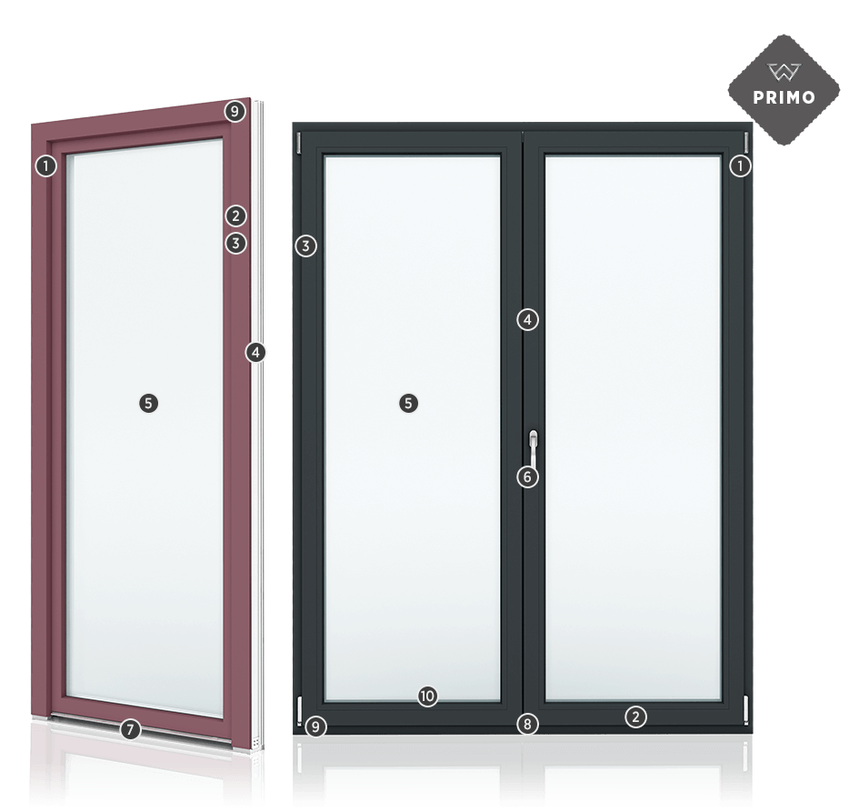

Charakterystyka okien PVC PRIMO82
- Okna w klasie A, o zaawansowanych parametrach termoizolacyjnych, głębokości zabudowy 82 mm, 76 mm lub 70 mm oraz ramach 7 lub 5 komorowych;
- Okna w kolorach HI 2.0 dostępne w wersji z nakładką aluminiową - dotyczy PRIMO 82 oraz PRIMO 70;
- Profil okienny barwiony w masie w kolorach (antracytowy, brązowy, karmelowy i biały) dopasowany do koloru oklein;
- Okucia Maco MultiMatic – bogate wyposażenie standardowe gwarantuje bezpieczeństwo i wysoki poziom komfortu użytkowania. Produkt uzupełnić można również o dodatkowe opcje, m.in. SecuAir i ukryte zawiasy;
- Jedno– i dwukomorowe pakiety szybowe o doskonałych właściwościach termoizolacyjnych, opcjonalnie z ciepłą ramką dostępną w 6 różnych kolorach;
- Szeroka gama kolorów klamek aluminiowych w standardzie. Opcjonalnie dostępne są wersje z kluczykiem i przyciskiem, klamki Secustic i SecuForte oraz pochwyty do drzwi balkonowych;
- Aluminiowy niski próg w drzwiach balkonowych, dostępny łącznie z zawiasami krytymi oraz w klasie antywłamaniowej RC;
- Dwa zaczepy antywyważeniowe w standardzie
- Zgrzew naroży metodą bezwypływkową V-Perfect w standardzie, który staje się niemal niewidoczny dla ludzkiego oka;
- Uszczelki ekstrudowane dostępne w 3 kolorach (szary, czarny, karmelowy);